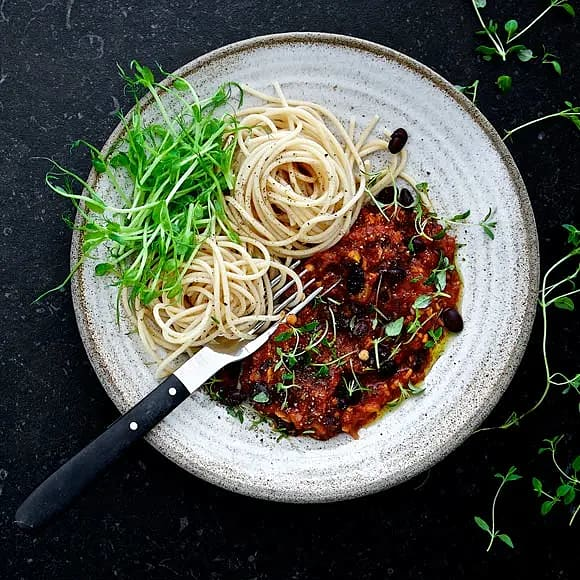

Vegetarisk bolognese
Testa bolognese i vegetarisk tappning! Med röda linser, svarta bönor, rivna morötter och rotselleri i en mustig sås med krossade tomater...

Så här gör du:
- Bryn lök, vitlök och morötter i oljan i en gryta. Rör ned tomatpuré och kryddor och låt det fräsa med någon minut.
- Tillsätt resterande ingredienser utom svarta bönor, låt koka ca 20 min.
- Skölj bönorna väl och tillsätt i såsen. Smaka av med salt och peppar.
- Till servering: Koka pastan enligt anvisning på paketet. Servera bolognese med nykokt pasta och klipp över lite färska örter.